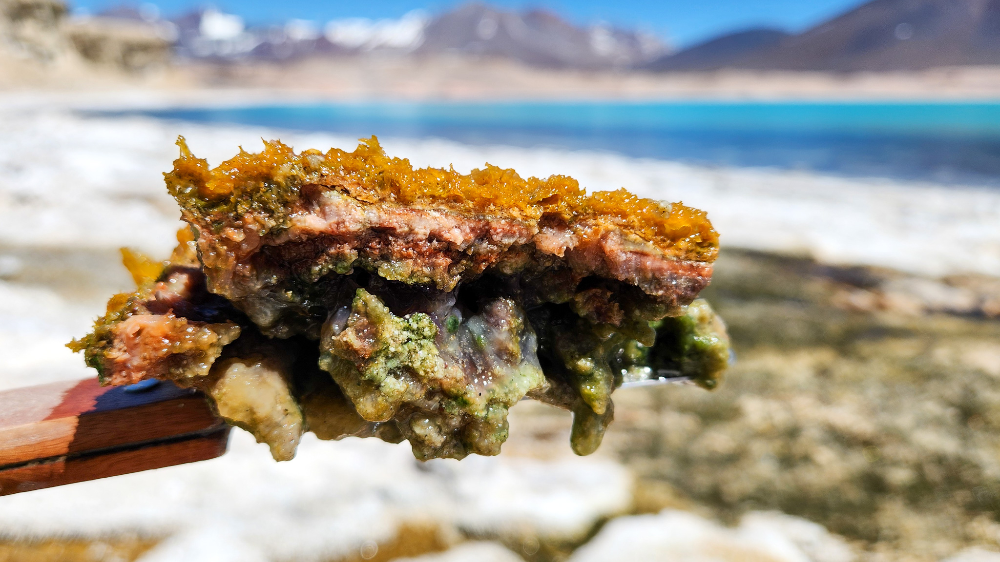
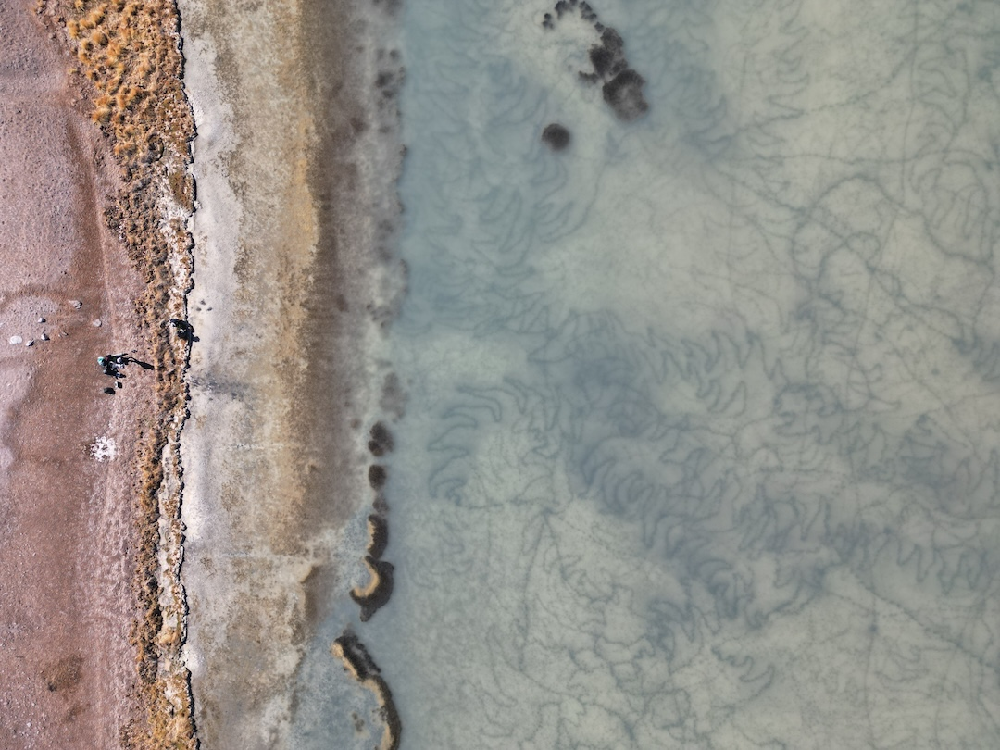

Microbiología
La línea de Microbiología del proyecto OASIS estudia las comunidades microbianas que habitan los salares
y lagunas altoandinas del sistema de Maricunga, con especial énfasis en los tapetes microbianos que se
desarrollan en la interfaz agua–sedimento. Estas estructuras laminadas están formadas por consorcios de bacterias,
arqueas y microalgas que prosperan en condiciones extremas, donde prácticamente ni plantas ni animales pueden
sobrevivir.
Estos microorganismos juegan un rol clave en los ciclos biogeoquímicos del carbono, nitrógeno, fósforo y
azufre, participando en procesos de biomineralización y en la precipitación de minerales como los
carbonatos, con implicancias potenciales para la comprensión de la dinámica del litio en estos sistemas.
Desde la escala de microhábitat hasta la red trófica local, esta línea de trabajo busca entender cómo los cambios en
los factores bottom-up (recursos, nutrientes) y top-down (presión de herbívoros o predadores) afectan la
diversidad y estructura de las comunidades microbianas, y cómo estas respuestas se conectan con la flora
y fauna asociada a los humedales y salares altoandinos.
El equipo de microbiología combina muestreo de tapetes, aguas, sedimentos, suelos y rocas, extracción de ácidos nucleicos, secuenciación
masiva (16S/18S ARNr, metagenómica y metatranscriptómica) y análisis bioinformáticos, integrando estos resultados
con parámetros físico–químicos y observaciones de terreno para caracterizar el nicho ecológico de microorganismos
extremófilos y potencialmente resistentes al litio.

Corte transversal de un tapete microbiano, mostrando su estructura estratificada de bacterias, arqueas y microalgas.
Hallazgos científicos relevantes
La investigación en ambientes extremos del sistema Maricunga ha revelado tres hallazgos de especial relevancia científica y tecnológica:
Precipitación Biológica de Litio
Los microorganismos de los tapetes y sedimentos podrían participar activamente en la precipitación biológica de litio en los salares. Esta biomineralización microbiana tiene implicancias directas en la comprensión del ciclo geobiogeoquímico del litio y en la evaluación del impacto de su extracción sobre los ecosistemas microbianos.
Biotecnología: Enzimas Extremófilas
Los tapetes microbianos del sistema Maricunga son fuente de oxidorreductasas extremófilas con alto potencial biotecnológico. Estables en condiciones de alta salinidad, baja temperatura y elevada radiación UV, tienen aplicación concreta en procesos de biorremediación en ambientes mineros.
Filtro Ambiental y Conectividad Microbiana Regional
Un estudio integrado de todo el sistema Maricunga–Santa Rosa, Laguna del Negro Francisco y Laguna Verde reveló que la salinidad es el principal filtro ambiental que estructura las comunidades de tapetes microbianos. Pese a que solo un 15% de las variantes genéticas se comparte entre hábitats salobres e hipersalinos, existe un grupo reducido de taxones clave que conecta ecológicamente todo el sistema, formando un microbioma regional compartido.
Ver publicación completa →
Campaña de muestreo microbiológico en el sistema Maricunga.
Publicaciones
Environmental filtering shapes microbial mat community assembly across interconnected high-altitude hypersaline systems of the Chilean Altiplano
Alcamán-Arias, M.E.; Vergara-Barros, P.; Fuentes, K.; Morales, D.; Vinet, L.; Barbosa Athayde, G.; Aguilera, M.; Bahniuk Rumbelsperger, A.M.; Calderón, M. (2026). Frontiers in Microbiology, Vol. 17.
DOI: 10.3389/fmicb.2026.1867952
Primer estudio a escala regional de la diversidad microbiana en tapetes, sedimentos y costras salinas del sistema Maricunga–Santa Rosa, Laguna del Negro Francisco y Laguna Verde. El trabajo demuestra que la salinidad y la conectividad hidrológica determinan en conjunto la composición, especialización y cohesión ecológica de las comunidades microbianas en estos ecosistemas polextremos, financiado por el Proyecto Anillo ATE240015 y FOVI220193.
Leer el paper completo